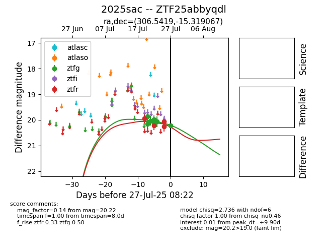

Target 2025sac at 2025-08-05 23:02, see:
FINK: fink-portal.org/2025sac
Lasair: lasair-ztf.lsst.ac.uk/objects/2025sac
ALeRCE: alerce.online/object/2025sac
TNS: wis-tns.org/object/2025sac
YSE: ziggy.ucolick.org/yse/transient_detail/2025sac
alt names
ZTF25abbyqdl (ztf,fink)
2025sac (tns,yse)
coordinates:
equatorial (ra, dec) = (306.5419,-15.31907)
galactic (l, b) = (29.1437,-27.72613)
photometry
last atlasc=16.01, ztfg=20.15, ztfr=19.99
2 atlasc, 10 ztfg, 5 ztfr detections
